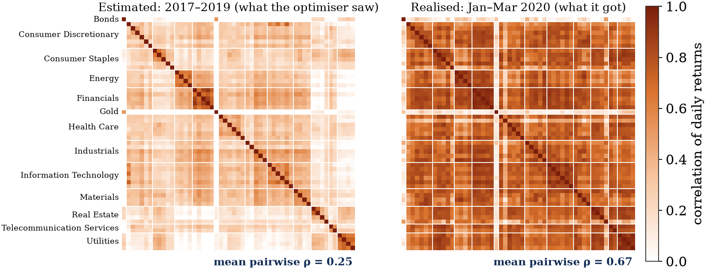
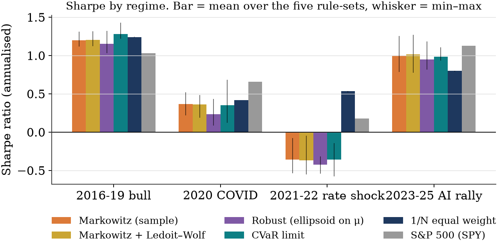
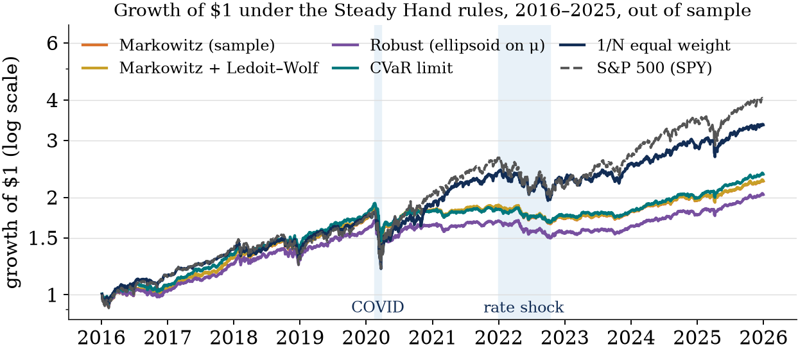
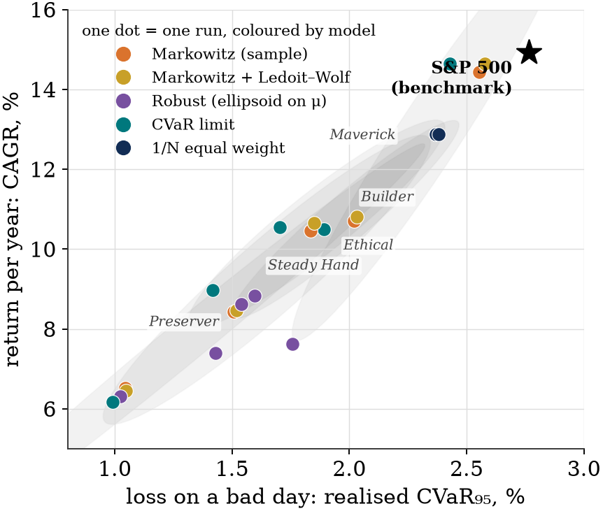
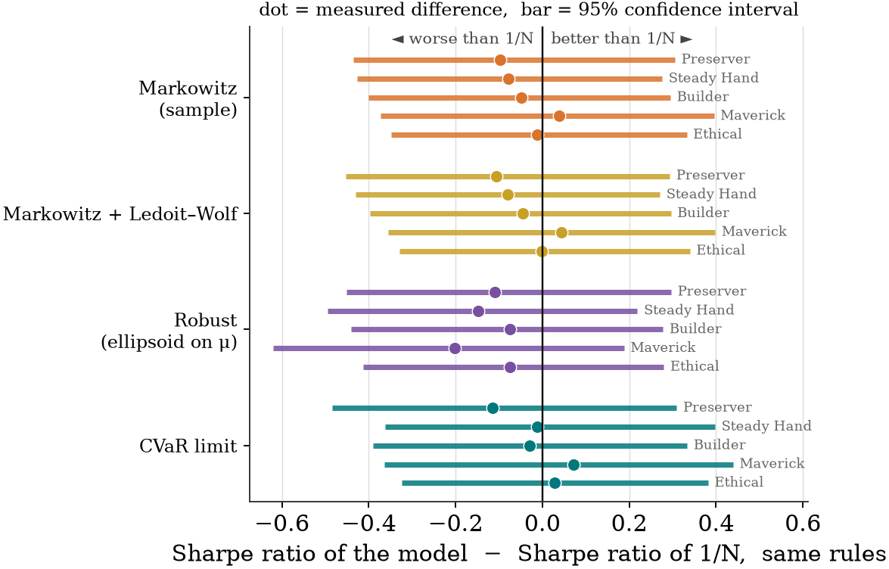

Blend-Ed · portfolio optimisation poster
Poster Guide
Everything behind each block of the poster: first the ideas, explained so that you could rebuild them, then what to say when you are standing next to it, and why that is the thing to say.
How to read this
The sections below follow the poster block by block, in reading order. Each section has the same shape. It opens with one line on what the block shows. Then it works through the concepts the block relies on, one at a time, each with a definition on first use and one example. Then a blue box gives a short script for what to say, followed by a note on why that is the point worth making. Some sections end with a question you can use to check that the idea has landed.
The poster itself is deliberately sparse: formulas and figures, very few words. This page is where the words live. If you can explain every section here in your own sentences, you can present the poster without notes.
Portfolio
A collection of investments held at the same time. In this project a portfolio is described entirely by its weights: the fraction of the total money placed in each asset. A portfolio that is 60% in one stock and 40% in cash has weights 0.6 and 0.4, and weights always add up to 1.
The story in one paragraph
Portfolio optimisation is a sixty-year-old idea that works beautifully on paper and disappoints in practice, because it runs on estimates of future returns and risks that are made from a short, noisy past. Researchers have proposed several repairs, and each repair is a different risk model. Meanwhile, real investors add rules the theory ignores: hold no more than a dozen names, keep some cash, cap each sector, pay for every trade. We asked a simple question: once those rules are in place, does the choice of risk model still change the outcome? We built one shared optimisation problem, plugged five risk models into it, ran each under five sets of investor rules through the same decade, 2016 to 2025, and measured what happened. The answer is that the rules decide most of the outcome, that no model beats the simplest possible portfolio by a statistically meaningful margin, and that the one thing the optimisers reliably bought was a smaller worst-case loss, at the price of some return.
Background
What the block shows. The problem in plain words, the question in bold, one line on what we ran, and one line of limitations.
Expected return and risk
Expected return
The average return an asset is predicted to earn over some period. Here it is a daily figure, estimated as the average of past daily returns. A stock whose past three years of daily returns average 0.05% has an expected daily return of 0.05%.
Risk
Any number that measures how badly the portfolio could do. The poster uses three different definitions at different points: the variance of returns (how spread out they are), the CVaR (the average of the worst days), and, in the results, the maximum drawdown (the largest peak-to-trough fall). Each is introduced where it is first used.
Portfolio optimisation, in the textbook form due to Harry Markowitz in 1952, is the idea of choosing weights to get as much expected return as possible for a chosen level of risk. It turns a judgement call into a calculation.
Estimation error
Estimation error
The gap between a quantity we estimate from past data and its true value. The expected return of a stock is never known; it is estimated from a few years of history, and that estimate can be badly wrong.
This is the central difficulty of the whole field. An optimiser is a machine for finding extremes: it puts the most money in whichever asset looks best. If an asset looks best only because of a lucky three years, the optimiser has just bet the portfolio on noise. Worse, the assets with the largest estimation errors are exactly the ones that look most attractive, so the optimiser is drawn towards its own mistakes.
The 2009 paper by DeMiguel, Garlappi and Uppal made this concrete. They tested fourteen sophisticated optimisers against the simplest possible portfolio, equal weight, and found that none of them beat it consistently out of sample. Equal weight is a portfolio with no estimates in it at all, so it has no estimation error.
Equal weight, written 1/N
The portfolio that puts the same fraction in each of N assets. With ten assets, each gets 10%. It ignores all data about returns and risks.
The investor's rules
The textbook problem has one constraint: weights add up to one. A real investor has several more. They will not hold forty positions, so there is a cap on the number of holdings. They keep some cash for emergencies, so there is a cash floor. They may refuse certain sectors, or cap how much can be in one sector. Every trade costs money, so they are reluctant to rebalance. These rules are the "constraints" in the poster's bold statement, and they change the problem in two ways: they shrink the set of portfolios the optimiser is allowed to pick from, and they limit how far it can go in chasing an estimate.
What to say
"Portfolio optimisation is the idea that you can compute the best mix of investments from historical data. It disappoints in practice because those data give noisy estimates, and an optimiser amplifies noise: it puts the most money wherever the estimate is most flattering. The literature has proposed several fixes, and each fix is a different way of measuring risk. But real investors also impose rules that the textbook ignores: a limit on holdings, a cash floor, sector caps, trading costs. Our question is whether, once those rules are in, the choice of risk model still matters. We tested five risk models under five sets of investor rules, over ten years the models never saw during design."
Why this and not more. The listener needs three things to follow the rest of the poster: what optimisation is, why estimates are the problem, and what the rules are. Everything else, including the model names, is explained by later blocks, so naming them here only adds load.
1. Experimental setup
What the block shows. What data we used, how time was split, and a table of the five investor rule-sets.
The universe
Universe
The list of assets the optimiser is allowed to choose from. Ours has 43: 40 US stocks, a bond ETF, gold, and cash.
GICS sector
GICS (Global Industry Classification Standard) is the scheme that assigns every listed company to one of eleven sectors such as Energy, Financials or Information Technology. We took the four largest companies in each of ten sectors as of the end of 2015, which is what makes the sector caps in the rule-sets meaningful.
ETF
An ETF (Exchange-Traded Fund) is a single tradeable share that holds a basket of other securities. AGG holds a broad set of US bonds; GLD holds gold. They let the portfolio own bonds or gold as one line each.
Cash is modelled as an asset that earns the three-month US Treasury bill rate. Treating it as an asset with a weight, rather than as "whatever is left over", is what lets the rule-sets impose a cash floor.
Survivorship bias
Survivorship bias
The error of studying only the things that survived. If you pick stocks today that were big in 2015, you have silently excluded every 2015 company that later collapsed or was taken over, so the past looks safer than it was.
We chose the universe as of January 2016, which removes the worst of this, but we could only check today which of those names still trade, and all forty do. This is the limitation the Background block states up front. It flatters every strategy equally, including the S&P 500 benchmark, so it does not bias the comparison between models, which is what the poster is about.
Tuning period and test period
Tuning period and test period
A split of the data in time. The tuning period, 2011 to 2015, is where we chose every free setting: how many days of history to use, how much to shrink estimates, when to rebalance. The test period, 2016 to 2025, was never used for any of those decisions. Everything on the poster comes from the test period.
This split is what makes the results honest. If you choose settings and report results on the same data, you are reporting how well you fitted the past, not how the method behaves on the future. The word for results measured on data the method never saw is out of sample.
The rule-sets
Rule-set, or investor archetype
One row of the table: a complete set of constraint values that describe one kind of investor. The five are stylised people, from the Preserver, who would rather miss a rally than sit through a crash, to the Maverick, who holds eight names with no cash.
The columns are the constraints of the portfolio problem in block 2. The CVaR limit is the risk budget and is explained with block 3. Its two values, start and end, exist because the limit tightens over the investor's ten-year horizon, so a Builder who may lose up to 2.0% on a bad day in 2016 may lose only 1.0% by 2025. This is the same idea as a target-date fund, which moves from stocks to bonds as retirement approaches.
The numbers were not typed by hand. The risk ladder comes from the allocations of Vanguard's LifeStrategy funds, the tightening from Vanguard's target-date glide path, and the holdings caps and cash floors from the 2022 US Survey of Consumer Finances, which records how many stocks real households actually hold. A sixth archetype, the Sprinter, has a three-year horizon and appears on the website; it is left off the poster because a three-year run cannot be compared with ten-year ones.
What to say
"We used 43 assets: 40 large US stocks, four per sector so that sector caps mean something, plus a bond fund, gold, and cash. Prices run from 2008. We chose every setting on 2011 to 2015 and then locked them; everything on this poster is 2016 to 2025, which the models never saw. The five rows are five kinds of investor, each defined by the constraints in the next block, and their numbers come from published fund allocations and household survey data rather than from us."
Why. Two things make or break credibility here: that the test period is genuinely out of sample, and that the rule-sets were not tuned to make a point. Say both explicitly, because those are the two things a sceptical listener is silently wondering.
2. The portfolio problem
What the block shows. The definitions, the objective, and the constraints that every model shares. Only the risk term ρ(w) changes between models.
Decision variables
Decision variable
A number the solver is free to choose. Everything else in the problem is either data or a fixed parameter. The decision variables here are w, z, b and s.
The weights w are the real decision: one fraction per asset. The other three exist to make rules expressible.
Binary variable z
A variable that may only be 0 or 1. Here za = 1 means "asset a is held". It exists so that we can count holdings: the sum of the z's is the number of assets in the portfolio.
The variables b and s are the amounts bought and sold since the current weights wprev. They exist because trading costs depend on how much you trade, and "how much" is the absolute value of the change in each weight, |w − wprev|. Absolute values are not linear, and solvers want linear expressions. The standard trick is to write the change as a purchase minus a sale, b − s, with both non-negative. Since the objective charges for b + s, the solver never sets both positive at once, so b + s comes out equal to the absolute change.
The objective
Objective
The single number the solver tries to make as large as possible. Ours is expected return over the holding period minus trading cost.
The factor h = 21 is the expected number of trading days until the next rebalance, about one month. Expected return μ̂ is per day, but a trade cost τ is paid once. Without h, one day of expected return, about five hundredths of a percent, could never justify a trade costing ten hundredths, and the model would sit in cash for ever. Multiplying by h compares a month of return against a one-off cost, which is the comparison an investor actually makes.
Basis point, bp
One hundredth of a percent. The cost τ of 10 bp means that moving 100% of the portfolio costs 0.1% of its value. That is a realistic all-in cost for large US stocks.
The risk measure ρ(w) does not appear in the objective. It appears as a constraint: risk must stay below the investor's limit ρmax(t), where t is the date and the limit tightens over time. This is a deliberate design choice. An investor thinks "I can accept losing at most this much", not "I value return and risk in the ratio 3 to 1", so a limit is the honest way to express their preference.
The constraints
- Budget. The weights add up to 1: all the money is placed somewhere, including cash.
- Trade balance. Each new weight equals the old weight plus what was bought minus what was sold. This is the line that defines b and s.
- Minimum and maximum position. If an asset is held (z = 1) its weight must lie between wmin and wmax; if not held (z = 0) its weight must be zero. The lower bound stops "dust", positions so tiny they are pointless to trade. The upper bound is the investor's concentration limit, and setting it to zero is how a sector or company is excluded.
- Cardinality. The number of held non-cash assets is at most K. This is the "at most a dozen names" rule, and it is why the problem needs binary variables at all.
- Sector caps and cash floor. The total weight in each sector is at most ck, and the weight in cash is at least cmin.
Mixed-integer programme
An optimisation problem in which some variables must be whole numbers. Because of the binary z's, every model on the poster is one. Mixed-integer problems are much harder to solve than continuous ones, which is why solver choice matters and why the CVaR model, being linear, is the cheapest.
What to say
"This is the one problem every model solves. The decision is the weights. The other variables exist to express rules: z counts holdings, b and s measure trading. The objective is a month of expected return minus the cost of getting there. Risk is not in the objective; it is a limit, because that is how an investor thinks, and the limit tightens as their horizon shrinks. The constraints are the investor's rules: fully invested, at most K names, no tiny positions, sector caps, a cash floor. The only thing that changes between the five models is the risk term ρ."
Why. The whole experiment rests on "everything is shared except ρ". If the listener believes that, every difference in the results is attributable to the risk model. Make that sentence the last one you say at this block.
3. Five risk models
What the block shows. One formula per model. Each is a different answer to the estimation-error problem.
Markowitz: variance
Covariance matrix Σ
A table with one row and one column per asset. Each diagonal entry is an asset's variance, the average squared distance of its daily returns from their mean, which measures how spread out they are. Each off-diagonal entry is the covariance of two assets, which is positive if they tend to move together and negative if they move opposite.
The portfolio's variance is wᵀΣw. If two assets are held and they move opposite each other, their negative covariance reduces the total, which is diversification in one formula. Markowitz's model caps this quantity. It is the textbook, and everything else on the block is a repair to it.
Because the rule-sets state their risk limit as a CVaR (below), the variance models translate it into a variance cap by assuming daily returns follow a normal distribution, the bell curve. Under that assumption a CVaR at the 95% level is a fixed multiple, about 2.06, of the standard deviation, so the cap is (CVaR limit / 2.06)². This translation is one of the limitations listed in the conclusions.
Markowitz + Ledoit–Wolf: fix the covariance
Shrinkage
Pulling a noisy estimate part of the way towards a simple, stable target. The estimate keeps some of what the data say and gives up some of the noise.
A covariance matrix for 43 assets has 946 distinct entries, all estimated from about 750 days. Many of those entries are noise. Ledoit and Wolf's 2004 method shrinks the whole matrix towards a target that is the identity matrix scaled by the average variance, that is, a world in which every asset has the same variance and none are correlated. The amount of shrinkage δ is not a free choice; it is computed from the data to minimise the expected error of the result. In our data δ comes out between 0.02 and 0.03, so the shrunk matrix is nearly the sample matrix, which is why this model behaves almost identically to plain Markowitz in the results.
Robust: fix the mean
Robust optimisation
Optimising for the worst case over a set of plausible values of an uncertain input, rather than for one point estimate.
The uncertain input here is the expected return μ̂. The model assumes the true mean lies somewhere in an ellipsoid, a stretched sphere, centred on μ̂, whose shape is the covariance of the estimation error, Ω = Σ̂/|S|. The parameter κ sets how large the ellipsoid is, measured in standard errors. The objective then uses the worst expected return in that set, which works out to μ̂ᵀw − κ√(wᵀΩw). The second term is a penalty that grows with how much the portfolio leans on uncertain estimates, so the model is deliberately pessimistic about anything that looks too good.
We used κ = 1. The tuning period showed that the Sharpe ratio fell steadily as κ grew, which already hinted at the result: once concentration is limited by the rules, adding more pessimism only costs return.
CVaR: change the risk measure
VaR (Value at Risk)
The loss that is exceeded only on a small fraction of days. A 95% one-day VaR of 2% means that on 95% of days you lose less than 2% and on 5% of days you lose more.
CVaR (Conditional Value at Risk)
The average loss on those worst days, the 5% of days beyond the VaR. If VaR says "the bad days start at 2%", CVaR says "and on those days you lose 3.4% on average". It answers the question an investor actually asks: how bad is bad?
CVaR makes no assumption about the shape of returns. It looks at the actual historical days, each treated as one possible tomorrow, works out what the portfolio would have lost on each, and averages the worst 5%. Variance, by contrast, treats a very good day and a very bad day as equally "risky" and, under the normal assumption, underestimates how fat the tails of real returns are.
The formula on the poster is the Rockafellar–Uryasev linearisation, which is what makes CVaR usable in a solver. ζ is a free variable that the solver ends up setting to the VaR. For each historical day s, us is the loss beyond ζ on that day, or zero if the day was not that bad; the two constraints us ≥ loss − ζ and us ≥ 0 together say exactly that. Adding ζ to the average of the u's over the worst 5% of days gives the CVaR. Every line is linear, so the whole model is a linear programme with binaries and solves in about a second with the free solver HiGHS.
Equal weight
Equal weight puts 1/N in each permitted asset. It ignores μ̂, Σ̂ and every rule except the exclusions, so it is not really a model at all; it is the control. Following DeMiguel and colleagues, it is the bar that any optimiser has to clear to justify its existence.
What to say
"Each line is a different answer to noisy estimates. Markowitz is the textbook: cap the variance. Ledoit–Wolf keeps that but shrinks the covariance matrix towards a simpler one, so it fixes the covariance. Robust assumes the expected returns are wrong by up to κ standard errors and optimises the worst case, so it fixes the mean. CVaR changes the question: instead of variance it caps the average loss on the worst 5% of historical days, with no assumption about the shape of returns, and it is the cheapest to solve because it is linear. Equal weight is the control: no estimates, so no estimation error."
Why. The audience will not remember five formulas, but they will remember "fix the covariance, fix the mean, change the question, or give up". Give each model its one-phrase role and they can follow the results without rereading the block.
4. When the portfolio is reweighted
What the block shows. The three conditions that trigger a re-solve, the daily loop the backtest runs, and how the years are split.
Walk-forward backtest
Backtest
A simulation that replays history day by day, letting a strategy make decisions with only the information available at each date, and records what it would have earned.
Walk-forward
A backtest in which the estimation window moves forward with time. On each decision date the model is fitted on the days before that date, never after, and then the portfolio is held until the next decision.
Look-ahead bias
The error of letting a strategy use information it could not have had at the time, such as fitting on 2020 data and then trading through 2019. It makes results meaningless, and it is easy to introduce by accident. One function in the code is responsible for the window and returns only rows strictly before the decision date.
The loop in the diagram is the whole backtest. Each day the holdings drift with that day's returns, so the weights are no longer what the model chose. Then the triggers are checked. If none fires, hold. If one fires, estimate μ̂, Σ̂ and the scenarios from the previous 756 trading days, about three years, solve the problem in block 2 starting from the current weights, pay the trading cost, and continue.
The three triggers
Most backtests rebalance on a calendar, say every month. We rebalance on events, with a calendar fallback.
- Calendar. At least once every 63 trading days, one quarter, so the portfolio is never stale.
- Drift. When the total absolute gap between the weights currently held, wprev, and the weights chosen at the last solve, wtarget, reaches 0.10. Prices move every day, so a portfolio that was solved to 10% in one stock may be 12% in it a month later; the sum of all those gaps is the drift. At 0.10, prices have moved a tenth of the portfolio away from the plan. This is a re-solve, not a reset to the old target, because the estimates may have changed too.
- Volatility regime. When the market's volatility over the last 21 days is at least twice its volatility over the last 252 days. "The market" here is the equal-weight average of the 40 stocks' daily returns; σ21 is the standard deviation of that series over the last month and σ252 over the last year. In a normal month the ratio hovers near 1. When it reaches 2, the last month has been twice as turbulent as the year, which means the three-year estimates are probably stale. This is the "something has changed" trigger, and it is what fires in March 2020.
Volatility
The standard deviation of returns over a period, the usual measure of how much prices are jumping around. σ21 is measured over the last month, σ252 over the last year.
A cooldown of ten days between solves stops a crash from triggering a re-solve every single day. The 756-day window, the drift level and the volatility level were all chosen on 2011 to 2015 by Sharpe ratio, together with the amount of shrinkage applied to expected returns, 0.75, which pulls each asset's mean three quarters of the way towards the cross-asset average.
Two things that broke while building this
First, an early version had no factor h in the objective, so one day of expected return could never justify a trade and every model sat in cash for the whole decade. Second, the shrinkage of expected returns was applied to cash too, which pulled cash's return up towards the stock average and made it look like a stock with no risk, so again the model sat in cash. Cash is now exempt: its expected return is the known Treasury rate, not an estimate. Neither of these is on the poster, but both are good answers if someone asks what was hard.
What to say
"The portfolio is re-solved when one of three things happens: a quarter has passed, prices have pulled the holdings 10% away from the plan, or the market has become twice as volatile as its yearly norm. Each solve only ever sees the three years before it; nothing after. Every setting on this block was chosen on 2011 to 2015, and then we ran the loop forward through 2016 to 2025 without touching it."
Why. The listener needs to trust two things: that the model never peeked at the future, and that the rebalancing is realistic rather than a daily free-for-all. The diagram shows the first; the triggers show the second.
5. Results I: when the inputs fail
What the block shows. The correlation matrices before and during the COVID crash, and the Sharpe ratio of each model in four market regimes.
Correlation and why it rises in a crash
Correlation ρ
Covariance rescaled to lie between −1 and +1. A correlation of 0 means two assets move independently; +1 means they move in lockstep. It is the covariance matrix with the units taken out, which is why it is the better one to look at.

On the left you can see structure: utilities correlate with utilities, banks with banks, and most pairs sit near 0.2. This structure is what diversification relies on. If assets move independently, a fall in one is offset by others, and the portfolio's variance is much less than the average asset's variance.
On the right, almost everything is dark. In a panic, investors sell everything at once, so every stock falls together regardless of sector. The mean pairwise correlation went from 0.25 to 0.67. Diversification is measured in calm markets and needed in crashes, and that is exactly when it disappears. Every model on the poster had been fed the left-hand matrix and then traded in the right-hand one.
This block is where the covariance estimate, an abstract input in blocks 2 and 3, becomes something you can see going wrong. It also explains the shape of the results: if the inputs to every model fail at the same moment, the models cannot differ much at that moment, and the thing that limits the damage is not the risk term but the rules, in particular the cash floor and the caps.
The Sharpe ratio
Sharpe ratio
Return earned above the risk-free rate, divided by volatility, annualised. It is return per unit of risk. A Sharpe ratio of 1 means the strategy earned one percentage point of excess return for every point of volatility it exposed the investor to. It is the standard yardstick because it lets a cautious and an aggressive portfolio be compared on equal terms.

The decade is split into four regimes, each a different kind of market. In the 2016 to 2019 bull market every model does well and they are hard to tell apart. In 2020 every model drops together, as the matrices predict, and the S&P 500 does best because it never sold in the crash and rode the recovery in full. The 2023 to 2025 period is the AI rally, where a handful of technology stocks drove the index; every rule-set caps those names, so every model trails the index.
The interesting column is 2021 to 2022. Every optimiser has a negative Sharpe ratio and equal weight is clearly positive. The reason is the three-year estimation window. At the start of 2022 the optimisers' windows covered 2019 to 2021, a period in which technology and growth stocks had done extraordinarily well, so every optimiser's μ̂ said "buy more of those". Then interest rates rose sharply and those exact stocks fell hardest. Equal weight held the same amount of everything and was not caught. This is estimation error in its most common disguise: an optimiser fed recent history is a momentum strategy that does not know it is one.
What to say
"These are the correlations between the forty stocks, ordered by sector. Left is what the optimiser saw at the start of 2020, right is what actually happened in the next three months. Average correlation went from 0.25 to 0.67: in a crash everything falls together, which is exactly when diversification is needed and exactly when it vanishes. Every model was fed the left picture. The bar chart shows what that did: in 2020 all models fell together. The column to look at is 2021 to 2022, where every optimiser went negative and equal weight stayed positive, because a three-year window had loaded them onto the 2019 to 2021 winners just before rates rose."
Why. The heatmap is the most memorable image on the poster, so use it to explain the mechanism once, then let the regime chart show the consequence. The 2021 to 2022 column is the strongest single piece of evidence for the thesis that estimation error, not risk-model choice, drives outcomes.
6. Results II: rules vs models
What the block shows. The growth of one dollar under one rule-set, a scatter of all 25 runs, the bootstrap comparison against equal weight, and the summary table.
The growth chart

This is orientation rather than a finding. It shows what a decade looks like: the index on top, equal weight next, then a cluster of three optimisers, then robust alone at the bottom. The two shaded bands are the COVID crash and the 2022 rate shock. You can see all lines dip together in the first band, and the optimisers flatten in the second while equal weight keeps climbing.
CAGR (Compound Annual Growth Rate)
The single yearly growth rate that would turn the starting value into the ending value over the period. A CAGR of 10% over ten years means the money grew by a factor of 1.1 ten times over, about 2.6 times in total.
The scatter: rules decide risk

The horizontal axis is realised CVaR: the average loss on the worst 5% of days that actually happened, in percent. The vertical axis is CAGR. A point higher and further left is better.
The thing to notice is which points sit together. Each grey ellipse is one rule-set, and the five differently coloured points inside it are the five models run under those rules. The Preserver ellipse sits in the bottom-left with a realised CVaR around 1%; the Maverick ellipse is in the upper right around 2.4%. Points of one colour, meaning one model, are spread right across the chart. So the rule-set decides where a portfolio lands on the risk axis, and the model only moves it a little along that ellipse. The one consistent exception is robust, the purple point, which sits at the low-risk, low-return end of every ellipse. This is the poster's headline in one picture.
The bootstrap: is any difference real?
Bootstrap
A way to estimate how much a measured number would vary if history had been slightly different. You build many alternative histories by resampling the actual daily returns with replacement, recompute the number on each, and look at the spread. The spread is a confidence interval.
Confidence interval, 95%
A range that would contain the true value in 95 out of 100 repetitions of the experiment. If the interval for a difference between two models includes zero, the data cannot tell the two apart.
Block bootstrap
A bootstrap that resamples runs of consecutive days rather than single days, so that the clustering of volatility that real markets show, calm weeks and stormy weeks, survives the resampling. We used blocks of random length averaging 21 days.

The comparison is paired: the same resampled sequence of days is applied to every run, so a model and its equal-weight counterpart are always judged on the same alternative history. The dots are mostly a little to the left of zero, meaning the optimisers had a slightly lower Sharpe ratio than equal weight under the same rules. Every interval crosses zero, some by a wide margin. One decade of daily data, even 2,500 days of it, is simply not enough to declare any of these models better or worse than the simplest portfolio. That is a result, not a failure: it is what DeMiguel and colleagues found in 2009, reproduced on a fresh decade with realistic rules added.
The table: what the optimisers bought
Maximum drawdown
The largest fall from a peak to a subsequent trough over the whole period, as a percentage of the peak. It is the worst experience an investor who bought at the wrong moment would have had.
| Model | CAGR % | Sharpe | Max DD % | CVaR₉₅ % |
|---|---|---|---|---|
| Markowitz | 10.1 | 0.67 | −25 | 1.79 |
| Markowitz + Ledoit–Wolf | 10.2 | 0.67 | −25 | 1.81 |
| Robust | 7.8 | 0.59 | −22 | 1.47 |
| CVaR | 10.2 | 0.70 | −25 | 1.69 |
| Equal weight | 12.9 | 0.71 | −33 | 2.37 |
| S&P 500 | 14.9 | 0.74 | −34 | 2.77 |
Read the rows against equal weight. The three similar optimisers earned about 3 points a year less and had a maximum drawdown 8 points smaller: 25% against 33%. Their realised CVaR is also lower. The Sharpe ratios are the same to within noise. So the optimisers did not fail; they did what the rule-sets asked, which was to keep the worst days within a limit, and they paid for it in return. Robust went furthest in the same direction: the lowest risk on every measure, and the lowest return.
What to say
"The scatter has every run on it. Look at the marker shapes, which are the rule-sets: same shape, same place, whatever the colour. The rules decide how much risk you end up with, and the model hardly moves you. The bootstrap on the right asks whether any optimiser beats equal weight under the same rules, and no interval clears zero: one decade cannot tell them apart. The table says what the optimisers did buy: three to five points a year of return in exchange for a worst drawdown of 25% instead of 33%. They hit the risk limit they were given, and that is what it cost."
Why. There are three separate findings here and each figure carries one. Say them in that order, because each strengthens the next: the rules dominate, the models are indistinguishable, and the difference that does exist is the trade the investor asked for.
7. Conclusions
What the block shows. Four claims, each backed by one of the figures, and the QR code to the interactive site.
The rules matter more than the model. Evidence: the scatter clusters by rule-set; four models sit within 0.04 of each other on Sharpe ratio, inside the bootstrap intervals. This is the answer to the question in the Background block.
CVaR is the best optimiser and the cheapest. Evidence: highest Sharpe ratio of the four optimisers, 0.70, and a linear model that solves in about a second with a free solver, needing no covariance matrix at all. It still does not beat equal weight, so "best" is a modest word.
Robust is consistently worst. Evidence: the lowest Sharpe ratio, 0.59, and the purple line at the bottom of the growth chart in every rule-set. The explanation is that robust optimisation guards against concentrating in overestimated assets, but the cardinality and position caps already do that, so its penalty only removes return. The tuning grid showed the same: Sharpe fell as κ grew.
Nothing beats the S&P 500. Evidence: the star in the scatter. The decade was dominated by a handful of very large technology companies, and every rule-set caps the weight in any one name and in the technology sector. The optimisers bought a smaller drawdown, not a higher return, and the poster should say that plainly rather than hide it.
The limitations to keep in mind, and to volunteer if asked: one decade in one market; a universe with residual survivorship bias; the translation of a CVaR limit into a variance cap assumes a normal distribution; equal weight obeys the exclusions but none of the other rules, so it is not quite a like-for-like competitor; and no short selling or leverage anywhere.
What to say
"Four conclusions. First, once the investor's rules are in, the risk model barely matters: four models within a few hundredths of Sharpe, inside the noise. Second, of the optimisers, CVaR is best and cheapest, and it needs no covariance matrix. Third, robust optimisation is consistently worst, because it guards against a concentration the rules already prevent. Fourth, nothing beat the index in a decade driven by a few mega-cap names that every rule-set caps; what the optimisers delivered was a smaller worst loss, not more return. The site on the QR code lets you pick an investor and watch each model trade through the decade."
Why. End on the honest one. A listener who hears "nothing beat the index" from you, with the reason, trusts the other three conclusions more than one who has to work it out from the table.
Questions you will be asked
- Isn't this just DeMiguel's 1/N result again?
- Partly, and deliberately. Their finding is fifteen years old and was made on different data, without holding caps, sector caps or transaction costs. We reproduce it on a new decade with those rules added, and add the finding that the rules, not the model, set the risk level. Confirming a known result out of sample is worth doing.
- Why not just hold the index, then?
- For an investor who can accept a 34% drawdown, that is the right answer for this decade, and the poster says so. The rule-sets exist because many investors cannot: the Preserver's rules cap the worst day at 1%, and the index does not offer that. The question the poster asks is which model to use once you have decided you need rules, not whether you need them.
- Why do Markowitz and Ledoit–Wolf look identical?
- With 750 days and 43 assets, the estimated shrinkage δ comes out small, between 0.02 and 0.03, so the shrunk matrix is close to the sample one. Ledoit–Wolf matters most when there are few observations per asset; here there are about 17 per asset, which is enough for the sample covariance to be reasonable. The position caps also stop either model from exploiting small covariance differences.
- Is 5,000 bootstrap draws enough? Is the block length right?
- 5,000 draws makes the interval endpoints stable to about the second decimal, which is finer than anything we claim. The 21-day mean block length is a standard choice for daily returns; longer blocks widen the intervals slightly and do not change the conclusion, since every interval already crosses zero.
- How were the rule-set numbers chosen?
- None by hand. The risk ladder maps to Vanguard's LifeStrategy 20/40/60/80 stock allocations, the tightening over time follows Vanguard's target-date glide path, and the holdings caps and cash floors come from the 2022 Survey of Consumer Finances, which records that the median stock-owning household holds three to five individual stocks and keeps roughly a quarter of its financial assets liquid.
- What about the sixth investor on the site?
- The Sprinter has a three-year horizon, so its runs end in January 2019. It cannot be compared with ten-year runs on CAGR or drawdown, so it is on the website and not on the poster. Over its three years all five models were close, as they were for everyone in the 2016 to 2019 bull market.
- Did you tune anything on the test period?
- No. The lookback window, shrinkage, drift and volatility triggers, and κ for the robust model were all chosen on 2011 to 2015 by Sharpe ratio. The rule-set values come from external sources. The first time any model saw 2016 was the final run.
- Why a limit on CVaR rather than a penalty in the objective?
- Because an investor can state a limit, "I will not accept losing more than 1.5% on a bad day", and cannot state a penalty weight. The limit also lets the risk budget change over time in a way the investor understands. The code supports a penalty as well, with a weight λ, but it is set to zero in every rule-set.
Numbers to keep in your head
| Number | Value | Where it is used |
|---|---|---|
| Assets in the universe | 43 | 40 stocks, AGG, GLD, cash |
| Runs on the poster | 25 | 5 rule-sets × 5 models; Sprinter excluded |
| Estimation window | 756 days | about three trading years, before each solve |
| Shrinkage of expected returns | 0.75 | towards the cross-asset mean; cash exempt |
| Holding period h | 21 days | scales return in the objective |
| Trading cost τ | 10 bp | per unit of weight traded |
| Triggers | 63 d / 0.10 / 2× | calendar, drift, volatility regime; 10-day cooldown |
| CVaR level α | 0.95 | worst 5% of days |
| Robust κ | 1 | size of the uncertainty ellipsoid |
| Mean correlation, estimated → realised | 0.25 → 0.67 | 2017–2019 window vs Jan–Mar 2020 |
| Sharpe, four similar models | 0.67 – 0.71 | Markowitz, LW, CVaR, equal weight |
| Sharpe, robust / S&P 500 | 0.59 / 0.74 | the two outliers |
| Max drawdown, optimisers vs 1/N | −25% vs −33% | what the optimisers bought |
| Sharpe in 2021–22 | ≈ −0.36 vs +0.53 | every optimiser vs equal weight |
| Bootstrap | 5,000 × 21-day blocks | paired, stationary block bootstrap |